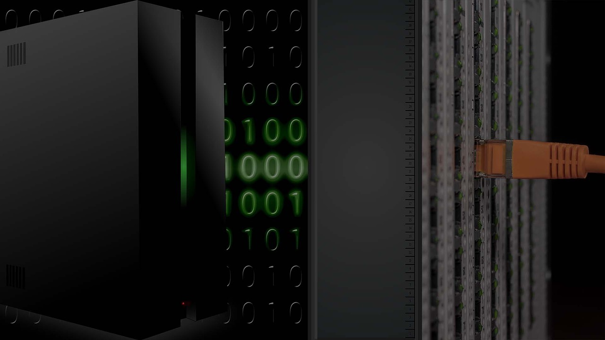

Instalacje
Instalacje anten
- Ustawianie anten satelitarnych
- Montaż anten satelitarnych
- Montaż anten naziemnych
- Wymiana kabla antenowego
- Sprawdzanie poziomu sygnału tv sat
- Sprawdzanie poziomu sygnału telewizji cyfrowej naziemnej
Instalacje sieci w budynkach
- Instalację sieci komputerowych
- Instalację systemów alarmowych
- Instalację systemów domofonowych
- Instalację monitoringu